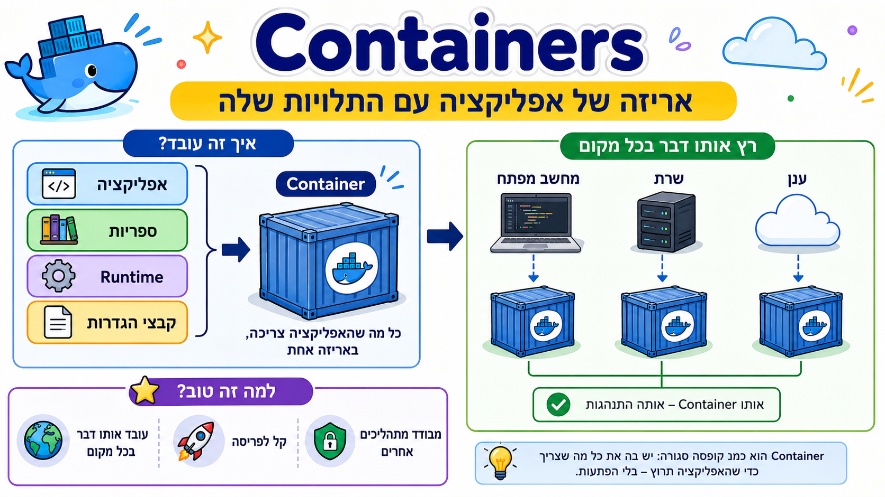

example.py
docker build -t hagpy-api .
docker run --rm -p 8000:8000 hagpy-apiexample.py
FROM python:3.12-slim
WORKDIR /app
COPY --from=ghcr.io/astral-sh/uv:latest /uv /uvx /bin/
COPY pyproject.toml uv.lock ./
RUN uv sync --frozen --no-dev
COPY src ./src
EXPOSE 8000
CMD ["uv", "run", "fastapi", "run", "src/main.py", "--host", "0.0.0.0", "--port", "8000"]solution.py
.venv
__pycache__/
*.pyc
.git/
.env
htmlcov/
.coverageDockerfile
image
container
port mapping